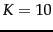
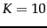

Next:
Evaluation of clustering
Up:
Problem statement
Previous:
A note on terminology.
Contents
Index
A difficult issue in clustering is determining the number of clusters or
cardinality of a clustering, which we denote by
 . Often
is nothing more than a good guess based on experience or domain knowledge. But for
-means, we will also introduce a heuristic method for choosing
and an attempt to incorporate the selection of
into the objective function. Sometimes the application puts constraints on the range of
. For example, the Scatter-Gather interface in Figure
16.3 could not display more than about
 clusters per layer because of the size and resolution of computer monitors in the early 1990s.
. Often
is nothing more than a good guess based on experience or domain knowledge. But for
-means, we will also introduce a heuristic method for choosing
and an attempt to incorporate the selection of
into the objective function. Sometimes the application puts constraints on the range of
. For example, the Scatter-Gather interface in Figure
16.3 could not display more than about
 clusters per layer because of the size and resolution of computer monitors in the early 1990s.
Since our goal is to optimize an objective function, clustering is essentially a search problem. The brute force solution would be to enumerate all possible clusterings and pick the best. However, there are exponentially many partitions, so this approach is not feasible.![[*]](http://nlp.stanford.edu/IR-book/html/icons/footnote.png) For this reason, most flat clustering algorithms refine an initial partitioning iteratively. If the search starts at an unfavorable initial point, we may miss the global optimum. Finding a good starting point is therefore another important problem we have to solve in flat clustering.
For this reason, most flat clustering algorithms refine an initial partitioning iteratively. If the search starts at an unfavorable initial point, we may miss the global optimum. Finding a good starting point is therefore another important problem we have to solve in flat clustering.
Next:
Evaluation of clustering
Up:
Problem statement
Previous:
A note on terminology.
Contents
Index
© 2008 Cambridge University Press
This is an automatically generated page. In case of formatting errors you may want to look at the PDF edition of the book.
2009-04-07